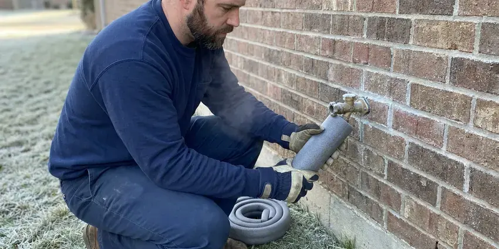

Water Damage Restoration in Waimalu, HI
HKL Plumbing dries soaked drywall, subfloor and cabinets in Waimalu, HI with commercial dehumidifiers and air movers.
- Insurance Documentation Support
- Leak Fixed First
- Insurance Claim Photos
- Fast Emergency Water Response

Stop the Leak, Dry the House in Waimalu, HI.
We document every step with photos and moisture readings to back up your insurance claim.
Drying and Repair for Homes in Waimalu, HI
HKL Plumbing sizes every drying setup to the room. A soaked 12 by 14 bedroom might get three air movers and one LGR dehumidifier, while a flooded finished basement could need eight or ten fans and two dehumidifiers. We go by the numbers. We adjust the equipment as the rooms in your Waimalu property dry out.
Work we handle every week:
- Structural drying and dehumidification
- Fast water extraction
- Infrared camera leak tracing

Additional Plumbing Maintenance Services in Waimalu, HI
Our maintenance and specialty plumbing services in Waimalu, HI catch small problems before they become emergencies.


Customers
Why Choose HKL Plumbing for Water Damage Restoration in Waimalu, HI?
Using one company for the plumbing repair and the restoration saves time and confusion. One contact handles everything, and your insurer gets a single record of the leak, the readings and the work. Adjusters like that.
- 24/7 Emergency, Leaks happen at 2 a.m., so we take after-hours calls.
- Pro-Grade Equipment, Truck-mounted extractors, LGR dehumidifiers and high-velocity air movers for cavity drying.
- Claim Support, Photos, readings and itemized invoices help your insurance claim go faster.
Citywide Coverage
Wherever you are in Waimalu, we can usually arrive quickly to stop the water and start drying. Homeowners, landlords, HOAs and businesses all get daily readings and full records. Size does not matter.
Experienced Team
Every technician on our HKL Plumbing crew in Hawaii is trained and experienced. They assess the damage, set up drying, and handle any rebuild to local building codes, so the wall that goes back up passes inspection. Code is not optional.
Safety-First Approach
Safety rules cover both our crew and your family. Protective gear, containment for mold or sewage and industry standards are part of every job. We seal off mold.
Trusted Certified Waimalu Plumbing Services Professionals
At HKL Plumbing, we are proud to offer certified plumbing services throughout Waimalu, HI. Credentials matter in this trade. Our plumbers hold recognized industry credentials, and they follow strict safety and quality rules on every repair, installation and maintenance call we run.
Call Us Now PHCC Plumbing Contractor Recognition
PHCC Plumbing Contractor Recognition Better Business Bureau (BBB) Accreditation
Better Business Bureau (BBB) Accreditation Angi Certified Pro
Angi Certified Pro ISO 9001 Quality Management Certification
ISO 9001 Quality Management CertificationExtraction to Rebuild Water Damage Service in Waimalu, HI
Structural Drying and Dehumidification in Waimalu, HI
Air movers push dry air across wet surfaces, and dehumidifiers pull the moisture out of that air. We use low-grain refrigerant units for most jobs and desiccant units for cold spaces or dense materials like hardwood and concrete. Readings come daily. Your Waimalu, HI home stays on equipment until the framing and subfloor match a dry reference.

Mold Prevention and Remediation in Waimalu
Warm, damp air speeds up mold growth after any leak. Our restoration process in Waimalu includes antimicrobial treatment on wet framing and the back side of drywall, along with drying fast enough to stay ahead of the 24 to 48 hour window. Existing mold gets removed. Big areas get sealed off.
Leak Detection and Repair in Waimalu, HI
Drying a wall that is still being fed by a leak wastes everyone's time. Before drying starts, our plumbers trace the leak with acoustic gear, thermal imaging and pressure tests. The repair comes next. A slab leak, a pinhole in copper or a cracked drain fitting in Waimalu, HI all get fixed on the same visit when possible.
Insurance Claim Assistance for Water Damage in Waimalu
Insurance claims for water damage come down to documentation. HKL Plumbing in Waimalu provides photos, daily moisture logs and an itemized scope of the restoration work. Adjusters expect it. We can walk the adjuster through the job, explain why a wall was cut or a cabinet was pulled, and send updated readings as drying continues.
Burst Pipe Water Damage in Waimalu
Burst supply lines can release gallons per minute and soak several rooms quickly. We shut off the main, repair the pipe and start extraction right away, often within the same hour the crew arrives at your home. Wet drywall gets cut. We cut a foot above the water line, then dry the cavities, framing and floors.
Commercial Water Damage Restoration in Waimalu, HI
Offices, restaurants and retail stores in Waimalu, HI lose money every day a space is closed. After-hours work, containment to keep part of the space open and enough equipment for a big floor all help keep you running. We work around you. Property managers get daily updates.
Insurance Claim Assistance in Waimalu, HI
Adjusters want proof of what was wet, how wet and for how long. Before-photos, daily moisture logs by room and an itemized scope in the format insurers use all go into your file. Copies go to you. We do not file the claim for you, but we can talk with your adjuster in Waimalu, HI about what we found.

Mold Prevention After Water Damage in Waimalu, HI
Mold can begin growing on damp drywall and wood within 24 to 48 hours. Without equipment, wall cavities and under-cabinet spaces stay wet for days, even when the weather is dry. Readings get logged every day. Antimicrobial goes on where needed.
Local Water Damage Crews Near Me in Waimalu, HI
Our crews know Waimalu housing, from older homes with plaster walls to newer builds with drywall over wood framing. Plaster takes longer to dry than drywall and often needs vent holes to reach the cavity. That changes the setup.
Being local, we know the foundations, wall types and plumbing common in Waimalu homes. Knowing how water moves in local homes helps us find it and dry it fully. Daily checks are easy.
HKL Plumbing at a Glance
- Fully licensed plumbing team covering Waimalu, HI
- 24/7 emergency service with same-day scheduling
- Upfront, flat-rate pricing before work begins
- 4.8-star rated by 529+ Hawaii customers
Waimalu Map
Waimalu Information
- Population
- 13,817
- Area codes
- Local
- Service area
- Waimalu and towns within a 40 mile drive
- Nearby
- Aiea, Halawa, Pearl City, Waipio
Water wicks up drywall about an inch an hour after a leak, so in Waimalu, HI the first day of drying decides how much gets torn out.
Expert Services
Reach out to HKL Plumbing for honest, reliable plumbing from people who know the trade in Waimalu, HI.
Our Specialized Plumbing Services in Waimalu, HI
At HKL Plumbing, we handle the full list of plumbing services across Waimalu, HI. From leak detection to full system installs, our team works fast and charges fair prices on homes and commercial properties alike. Take a look at our core services below:


How Water Damage Restoration Works in Waimalu, HI
Our restoration process moves from stopping the water to drying and rebuilding as quickly as possible.
Call Us
Call HKL Plumbing at (808) 649-6718 as soon as you find water. We tell you how to shut off the main and send a crew.
Stop the Leak
Our crew arrives, finds the source and repairs it before drying starts.
Extract
Pumps and extractors pull standing water out of carpet, pad and tile and wood.
Frequently Asked Questions About Water Damage Restoration in Waimalu
Extraction and drying alone in Waimalu, HI often runs $500 to $3,000. Structural repairs plus mold work can run $5,000 to over $20,000 based on rooms and materials. Water type changes the price. The estimate follows our assessment.
Mold prevention comes down to speed and dryness. We extract fast, set up air movers and dehumidifiers the same day, and treat wet framing and drywall backs with antimicrobial before the 24 to 48 hour window closes. The meters prove it.
Household fans help with small surface spills. They rarely dry wall cavities, subfloors or cabinets fully, because they move air across the surface without pulling moisture out of the room the way a dehumidifier does. Trapped water causes mold.
Any brand can fail. We see tank failures on Rheem and Bradford White heaters, hose and pump leaks on Whirlpool and Samsung washers, and door seal or supply leaks on Bosch and GE dishwashers. Old parts fail first.
Drying and minor drywall repairs usually do not need permits. Water heater swaps, repiping and structural work often require them. Permits are handled by us.
Submersible pumps and truck-mounted extractors handle standing water. For drying, we bring high-velocity air movers, commercial dehumidifiers, moisture meters and thermal cameras that show wet spots behind walls and under floors. It all fits on one truck.
Our drying setup includes high-velocity air movers, LGR and desiccant dehumidifiers, and pin and pinless moisture meters. Cavity drying systems blow air through small holes near the floor and can often save the drywall. Thermal cameras help too.
Swap rubber washing machine hoses for braided stainless ones. Check under sinks and behind the toilet every few months, keep gutters clear and make sure downspouts dump at least a few feet from the foundation. Frozen pipes are almost never a concern for homes in Hawaii, since sea-level and most residential areas never get cold enough to freeze water lines. Leak sensors are cheap.
Hear From Customers Who Hired Our Plumbing Experts

Karen W.
After our third pinhole leak in copper, we stopped patching. HKL Plumbing gave us a written plan room by room and repiped the house in PEX while we stayed in it. The crew covered our floors every morning and cleaned up every night.
Repiping · Waimalu, HI
Robert G.
The camera showed a full break in our clay sewer line near the street. HKL Plumbing replaced it with a trenchless pipe burst, so the only digging was two small pits in the yard. They let us watch the footage before and after.
Sewer Line Replacement · Aiea, HIDiane F.
My kitchen faucet had dripped for months and I finally got tired of hearing it at night. HKL Plumbing came out the next morning, replaced the cartridge and the O rings, and tightened a loose base that was letting water under the sink.
Faucet Repair · Waimalu, HIPatricia H.
We had a slab leak that two other companies could not find. HKL Plumbing located it in under an hour with a listening device. They rerouted the line through the attic instead of breaking up the floor, so we kept our kitchen tile.
Slab Leak Repair · Waipio, HI
Mark T.
The floor drain in our office break room backed up every few weeks. The plumber ran a cable, then put a camera down and found roots at a joint about thirty feet out. Seeing it on the screen made the decision easy.
Drain Cleaning · Waipahu, HI
Monica A.
Our water bill nearly doubled in one month with no change in how we used water. The tech checked the meter, heard the leak under the hallway with his equipment, and opened a hole about a foot square. Fixed the same day.
Slab Leak Repair · Waimalu, HI